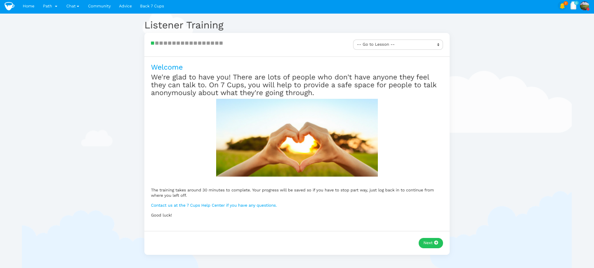
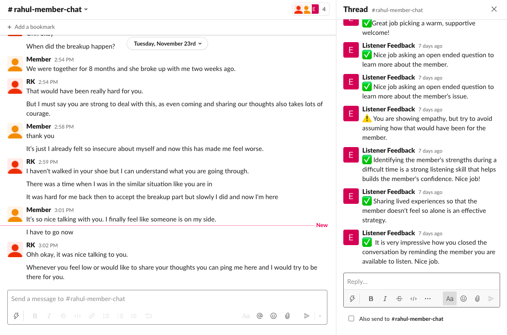
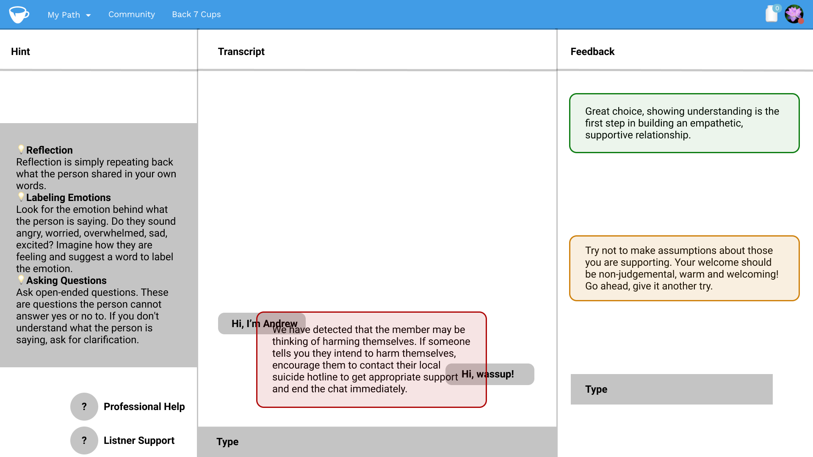

:max_bytes(150000):strip_icc():format(webp)/7_cups_of_tea-d9a45deb36284371a025c165079b8357.jpg)
Overview
The Centers for Disease Control and Prevention states 1 in 5 Americans will experience a mental illness in a given year. The widespread prevalence of mental health is not limited to the United States, the World Health Organization states that there has been a 13% rise in mental health conditions and disorders in the last decade globally. Despite how common mental health illnesses are, treatment is not available for everyone who needs it. 7 Cups is an on-demand emotional health service and online therapy provider, which serves to mitigate for high costs and inaccessible professional care through a free 24/7 peer-to-peer chat service. In 2020, 7cups.com had over 1 million members and 200,000 peer listeners on the platform each month.
The Problem
The 7 Cups listeners who volunteer their time to provide support to members on the platform did not feel adequately trained and prepared to begin providing emotional support. The 7 Cups basic required training entailed about 30-45 minutes of content, including didactic lessons on active listening skills and videos. The interactive exercises were limited. Upon completing the training, listeners were allowed to begin chatting with real members in a queue.
A research team at Carnegie Mellon University and Georgia Tech University collaborated to address this challenge, with the goal of leveraging natural language processing to develop chatbot technology. This chatbot would serve as a simulated member and provide the listeners an opportunity to practice and improve their active listening skills and maneuver difficult situations before real member chats.
Research
Problem Definition
Our team's goal was to improve the new listener's experience and improve their confidence and readiness. We knew we were addressing the problem with the chatbot solution, but our research needed to explore different requirements for optimizing the training environment.
Research Question
Assuming the chatbot conversation agent is sufficiently realistic and responsive, what other properties are needed to optimize the learning environment?
We broke this down into several focus areas.
- Scenarios: What type of issues and communication styles are most beneficial to practice chatting with?
- Feedback Structure: What kind of feedback is useful to reflect and improve active listening skills?
- Feedback Frequency: How often do listeners expect to receive feedback?
- Features: How can we integrate additional features, such as hints and sentence starters, to improve the listener's confidence and readiness?
- Interface: What is the optimal user interface for the chatbot training environment?
Participants
- 10 new listeners
- English speakers
- Less than 30 chats with members by the time of interview confirmation
- Active in the last two weeks
Methods
We had about 2 months to complete this project. We selected our methods based on our research question and focus areas. Our key questions were addressing listener's attitude and behaviors and we wanted to understand which aspects of the chats were challenging and why. We placed our participants in their context by simulating two chats with different members.
- Contextual Inquiry
- Wizard of Oz
- Semi-structured Interview 
We also co-designed the user interface with our participants to make their workflows more efficient and seamless.
- Co-Design Session 
The Outcome
Insights
[Add affinity diagram here]
- Listeners prefer shorter feedback and more immediate feedback because it allows them to remember and implement throughout the conversation
- Listeners value exposure to rare and emotionally taxing scenarios
- Listeners gain confidence through feedback that they can trust
- Listeners need support tools to be more accessible
Final Design Solution
[Add hi-fi prototype here]